제일 저렴해요

-

과거 대비 투자 비용 22% 절감!
구매비 864,3818원 절감 (23.84% ↓)
사료비 164,714원 절감 (4.11% ↓)
관리비 303,717원 절감 (44.83% ↓)평균 사육비 963만원 → 867만원
관리비, 사료비 등 송아지 1마리 키우는데 필요한 비용을 뱅카우 역량으로 96만원 줄였습니다.
(뱅카우가 23년 키운 781마리 기준) -

유전능력 높은 상품의 목표 수익률은 17.2%
2023년 기준으로 육량 및 육질 등급에서 가장 많이 나타난 등급은 1++(B)이며, 공동사업 참여자의 출하시 평균 도체중 성적은 467kg입니다.
2020년 1월 1일부터 2024년 3월 31일까지 한우 거세우 1++(B)1kg의 평균 가격은 22,872원입니다.
따라서, 1마리의 판매 금액은 10,681,224원으로 계산되고 뱅카우의 평균 사육비 8,668,000원을 빼면 1마리 경매하고 2,013,224원의 차익을 남기는 것을 목표합니다.
투자 포인트 01
싸게 산 송아지를 비싼 한우로23년 12월 기준, 송아지 구매가격은 과거 5년 평균가격(410만원) 대비 약 50만원 정도 하락했습니다.
이는 뱅카우의 이전 투자 상품인 21년 송아지 평균 구매비보다 무려 146만원 이상 하락한 수치인데요.
송아지를 저렴하게 구입하면, 한우를 비싸게 팔았을 때 더 큰 이익을 남기기 쉽습니다.
하지만, 송아지는 1++(A)등급부터 3등급까지 다양한 등급으로 판정되며, 도체중 또한 더 높거나 낮게 측정될 수 있습니다.
투자 포인트 02
사육비 22% 줄인 노하우그동안 뱅카우가 구축한 네트워크와 밸류체인을 토대로 원가를 절감했어요.
사료 회사와의 단기 계약 → 장기계약
글로벌 동물 영양 전문 기업인 '카길애그리퓨리나'와 오랜 협력 관계를 유지해왔고, 최고 품질의 퓨리나 브랜드 사료를 더 저렴하게 공급받을 수 있도록 장기 계약을 체결했습니다.
규모의 경제를 통한 경제적 이점
이전과 비교해 약 5배 정도 더 많은 송아지를 키우고, 사료비와 관리비 등 송아지에 투입되는 비용을 낮추는 데 성공했습니다.
투자 전 체크하기
투자 운용 전략이 있나요?투자하기 전에, 투자자산을 관리하는 회사가 투자 비용을 절감하기 위해 어떤 노력을 기울이고 있는지 확인해 보세요.
만약 회사가 이익을 증가시키거나 비용을 낮추는 데 어떠한 노력도 하지 않는다면, 투자에 대한 신중한 고려가 필요합니다.
뱅카우는 영업노하우와 네트워크 기술로 사료비와 관리비를 낮춥니다.
뱅카우는 직접 송아지를 구매하면서 얻은 경험과 정부기관·협회·파트너로부터 수집한 데이터를 활용하여 매일 시장을 분석하고, 언제, 어떤 가격에 송아지를 구매해야 수익을 극대화할 수 있는지 결정합니다.